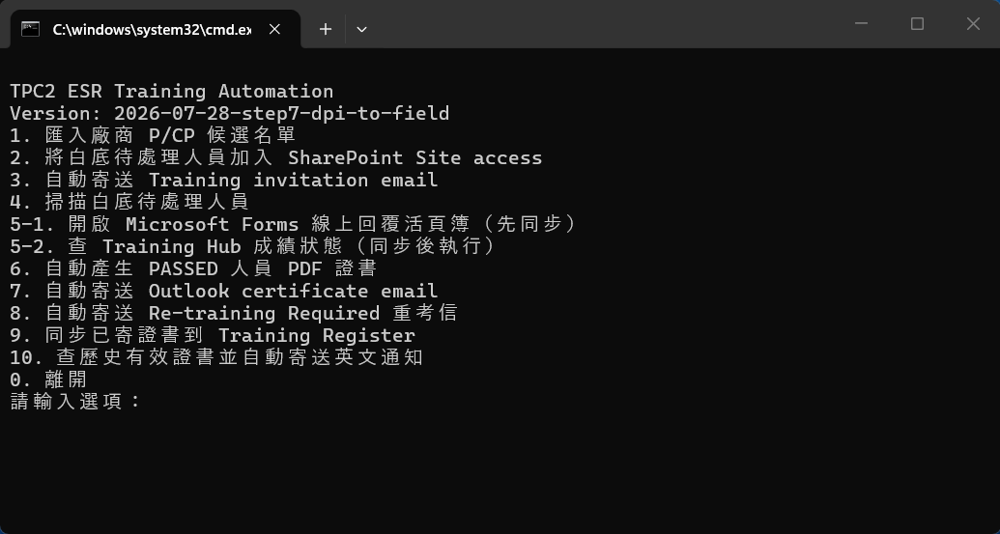

ESR P/CP Training｜照著號碼做¶
約 95% 自動化 · 發現小 bug 會持續修正
每次都雙擊這個檔案開始
Run ESR Training Automation (中文).cmd
1 打開雙擊上面的
.cmd 檔。2 輸入號碼點一下黑色視窗，輸入例如
5-1。3 按 Enter不是點選單。輸入號碼後按鍵盤 Enter。

🔍 點一下任何操作圖片即可放大；用 ＋／－ 縮放，按 Esc 關閉。
先記住：Step 3、7、8、10 會真的寄出 Email
執行前先看清楚姓名與 Email。其他 Step 不會寄信。
每天打開一次：只做這條線¶
- 輸入
5-1→ 按 Enter → 會開啟 6 份線上成績活頁簿。 - 若要選帳號，選自己的 OAIC／
@oaic.io帳號；保持頁面開啟 1–2 分鐘。 - 回到黑色視窗。有白底待處理人員才輸入
5-2；沒有白底人員，今天就完成。
點 Step，直接跳到操作說明¶
Step 1｜匯入廠商 P/CP 候選名單¶
- 尚未取得名單：開啟
00_Template\Training email Templates，寄出1. Person _ CP Candidate Request.oft。 - 收到 Excel：放進
01_Inbox\P_CP Candidate Lists。 - 打開中文
.cmd，輸入1，按 Enter。 - 看到
Done. Imported...代表完成。 - 若畫面出現
CONTRACTOR REPLY - Candidate Validity Confirmation：開啟 Template 2，貼上工具已複製的內容，再寄給廠商。


Step 2｜加入 SharePoint Site access¶
- 輸入
2，按 Enter。 - 看到選擇瀏覽器：直接按 Enter 使用 Chrome；要用 Edge 才輸入
E。 - 執行時不要碰滑鼠或鍵盤。
- 看到
完成 SharePoint Site access：成功 ...代表完成。
看到沒有白底人員
代表目前不需處理；回到選單即可。
Step 3｜寄出 Training invitation¶
- 先確認要寄給哪一位人員。
- 輸入
3，按 Enter。 - 輸入畫面要求的單一 Email，再按 Enter。
- 看到
SENT: ... training invitation才代表寄出成功。
這一步會寄信
Email 輸錯時先不要按 Enter。直接關閉黑色視窗，再重新開始。
Step 4｜查看白底待處理人員¶
看到 目前沒有偵測到白底待處理人員，代表現在沒有要繼續跑 5-2、6、7 的人。
Step 5-1｜每天先開線上成績檔同步¶
- 輸入
5-1，按 Enter。 - 直接按 Enter 使用 Chrome；要用 Edge 才輸入
E。 - 瀏覽器會開啟 6 個成績頁面。若 Microsoft 詢問帳號，選自己的 OAIC／
@oaic.io帳號。 - 不要關頁面，等待 1–2 分鐘。
- 回到原本的黑色視窗，再做 Step 5-2。
Step 5-2｜查 Training Hub 最新成績¶
- Person：總分
≥ 36才是 PASSED。 - CP：Module 1
≥ 20而且 Module 2≥ 20才是 PASSED。 WAIT：先不要做 Step 6 或 7。PASSED：可以繼續 Step 6。

Step 6｜產生 PDF 證書¶
- 輸入
6，按 Enter。 - 看到
完成，已自動產生以上 PDF 證書代表完成。 - 打開
04_Certificates，確認姓名、等級與 PDF。

Step 7｜寄出 Certificate email¶
- 先關閉不相關的 Outlook 草稿。
- 輸入
7，按 Enter。 - 若出現「未確認寄出」清單，只在要重寄時輸入編號／Email；一般處理直接按 Enter。
- 每人看到
SENT: email，最後看到Register 同步完成，才算完整完成。
這一步會寄出所有待寄證書
執行前先在 04_Certificates 檢查全部 PDF。不要用 Step 7 測試。
Step 8｜寄出 Re-training Required 重考信¶
- 先用 Step 5-2 確認哪些人未通過。
- 確認名單正確後才輸入
8，按 Enter。 - 系統會列出收件人並直接處理寄送；看到
SENT: re-training required email才代表成功。
這一步會寄信
如果不確定誰會收到，先不要執行。
Step 9｜補同步已寄證書到 Training Register¶
正常情況 不用 執行 Step 9。看到 Register 同步完成 就可以離開。
Step 10｜查歷史有效證書並寄英文通知¶
- 輸入
10，按 Enter。 - 輸入測試者的完整 Email，再按 Enter。Email 比姓名安全。
- 系統找不到、已過期或姓名對到多人時，會停止且不寄信。
- 找到仍有效證書時，看到
SENT: email代表英文通知已寄出。
有效時會立即寄信
輸入前再次確認 Email；不要用不完整姓名猜測。
第一次使用：安裝工具 + 顯示 Outlook Bcc
- 雙擊
Install ESR Automation Prerequisites.cmd。 - 等待顯示
Python packages OK。 - Outlook：File → Settings。

- Mail → Compose → Always show Bcc。

資料夾在哪裡
- 工具主資料夾：
OAIC Ltd\PROJECT_TWSHXESR - Documents\General\ESR AutoDoc Hub\04_ESR Training - 廠商名單：
01_Inbox\P_CP Candidate Lists - Email templates：
00_Template\Training email Templates - Training results：
02_Processing - Certificates：
04_Certificates - 正式 Register：
Safety Document - SFD Register\TWSHXHV_ESR_OverallRegister.xlsm - 工具寫入的工作頁：
Old Training Register
卡住？
先關閉相關 Excel 與 Outlook 草稿，再回到中文 .cmd 重跑同一個 Step。畫面若出現 FAILED、ERROR 或 WARNING，先截圖，不要直接跳到下一步。